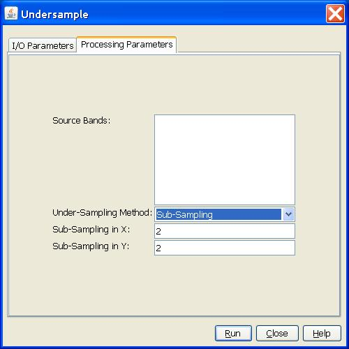
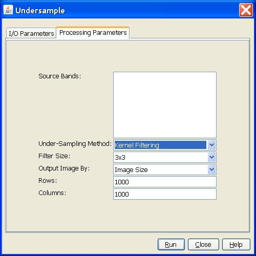
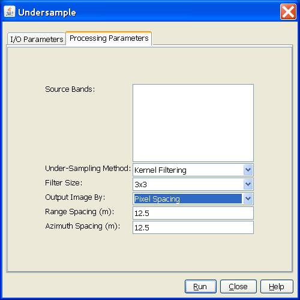

Undersample Operator
This operator downsamples a real or complex image using sub-sampling method or kernel
filtering method.
Undersampling Method
- Sub-sampling method: The image is downsampled with user specified sub-sampling
rates in both range and azimuth directions. For complex image, the i and q bands in
the image are downsampled separately, and the downsampled image is still a complex
image.
- Kernel-filtering method: The image is downsampled with a pre-defined low-pass kernel moving across
the image with a step-size determined by the size of the required output image. For complex
image, intensity image is computed from the i and q bands before kernel filtering is
applied. The downsampled image is always real image.
Undersampled Image Size
User can determine the output image size by specifying
- the output image size, or
- the pixel spacings, or
- the downsampling ratios.
Low-Pass Kernel
- The pre-defined low-pass kernel has three dimensions: 3x3, 5x5 and 7x7.
- The elements of the low-pass kernel are all 1's.
Parameters Used
If the sub-sampling method is selected for the downsampling, then the following
parameters are used by the operator:
- Source Band: All bands (real or virtual) of the source product. User can
select one or more bands for producing downsampled images. If no bands are
selected, then by default all bands are selected.
- Under-Sampling Method: Sub-Sampling method.
- Sub-Sampling in X: User provided sub-sampling rate in range.
- Sub-Sampling in Y: User provided sub-sampling rate in azimuth.

If the Kernel Filtering method is selected for the downsampling, and the downsampled
image is output by image size, then the following parameters are used by the operator:
- Source Band: All bands (real or virtual) of the source product. User can
select one or more bands for producing downsampled images. If no bands are
selected, then by default all bands are selected.
- Under-Sampling Method: Kernel Filtering method.
- Filter Size: The kernel filter size.
- Output Image By: The method for determining output image dimension.
- Output Image Rows: The row size of the downsampled image.
- Output Image Columns: The column size of the downsampled image.

If the Kernel Filtering method is selected for the downsampling, and the downsampled
image is output by image dimension ratio, then the following parameters are used by
the operator:
- Source Band: All bands (real or virtual) of the source product. User can
select one or more bands for producing downsampled images. If no bands are
selected, then by default all bands are selected.
- Under-Sampling Method: Kernel Filtering method.
- Filter Size: The kernel filter size.
- Output Image By: The method for determining output image dimension.
- Width Ratio: The ratio of the downsampled image width and the source image width.
- Height Ratio: The ratio of the downsampled image height and the source image height.
If the Kernel Filtering method is selected for the downsampling, and the downsampled
image is output by pixel spacing, then the following parameters are used by the operator:
- Source Band: All bands (real or virtual) of the source product. User can
select one or more bands for producing downsampled images. If no bands are
selected, then by default all bands are selected.
- Under-Sampling Method: Kernel Filtering method.
- Filter Size: The kernel filter size.
- Output Image By: The method for determining output image dimension.
- Range Spacing: The range pixel spacing of the downsampled image in meters.
- Azimuth Spacing: The azimuth pixel spacing of the downsampled image in meters.
